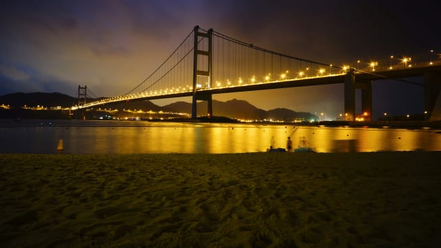

Every person experiences a struggling period in their lives where they learn, and understand the wonders of life precisely.
5. Gateshead Millennium Bridge,England
The Gateshead Millennium Bridge is the world's first and currently only tilting bridge. But the most amazing thing about this pedestrian and biker crossing of the Tyne River is that it appears as if an eye is winking whenever it is raised and lowered.

6. Tsing Ma Bridge: Hong Kong, China
Hong Kong's Tsing Ma Bridge is the largest suspension bridge in the world to feature two decks and carry both road and rail traffic
7.Pearl Bridge: Kobe-Naruto, Japan
The Pearl Bridge currently holds the title of "World's Longest Suspension Bridge" with a span of 1,991 meters. The second longest is China's Xihoumen Bridge.
8.Tower Bridge: London, England
A combined bascule and suspension bridge in London, England, spanning the River Thames, the Tower Bridge was opened on June 30, 1894 by The Prince of Wales. It is among the top iconic landmarks in a city filled with iconic landmarks.